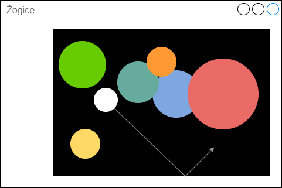

Licenca
To delo je na voljo pod pogoji slovenske licence Creative Commons 2.5:
priznanje avtorstva - nekomercialno - deljenje pod enakimi pogoji.
Celotna licenca je na voljo na spletu na naslovu http://creativecommons.org/licenses/by-nc-sa/2.5/si/. V skladu s to licenco je dovoljeno vsakemu uporabniku delo razmnoževati, distribuirati, javno priobčevati, dajati v najem in tudi predelovati, vendar samo v nekomercialne namene in ob pogoju, da navede avtorja oziroma avtorje in izdajatelja tega dela. Če uporabnik delo predela, kar pomeni, da ga spremeni, preoblikuje, prevede ali uporabi to delo v svojem delu, lahko predelavo dela ponudi na voljo le pod pogoji, ki so enaki pogojem iz te licence oziroma pod enako licenco.

Animacija žogic
S pomočjo naslednjega GUI programa bomo prikazali uporabo objektno usmerjenega programiranja, ki nam olajša preprosto animacijo velikega števila predmetov. Vmesnik GUI programa je pravokotnik, znotraj katerega se bo odbijalo 100 žogic.
Vsako žogico bomo ustvarili kot primerek razreda Zoga, z metodami tega razreda bomo poskrbeli tudi, da bo vsaka izmed žogic lahko imela različen polmer in različno barvo. Žogice se bodo tudi gibale v različnih smereh.
Izgled GUI vmesnika naj bo podoben spodnjemu modelu.

1 # encoding: utf-8 2 import tkinter as tk 3 import random 4 5 # Definicija globalnih spremenljivk 6 SIRINA = 400 7 VISINA = 300 8 9 # Ustvari okno in platno 10 okno = tk.Tk() 11 okno.title("Žogice") 12 13 platno = tk.Canvas(okno, width=SIRINA, height=VISINA) 14 platno.configure(bg="black") 15 platno.pack() 16 17 # Definicija razreda 'Zoga' 18 class Zoga: 19 20 # Ustvari objekt 'Zoga' s privzeto barvo in velikostjo 21 def __init__(self, barva="white", premer=30): 22 self.lik = platno.create_oval(10, 10, premer, premer, \ 23 fill=barva) 24 self.hitrost_x = random.randrange(-10, 10) 25 self.hitrost_y = random.randrange(-10, 10) 26 27 # Metoda, ki med animacijo premakne objekt 28 def premakni(self): 29 platno.move(self.lik, self.hitrost_x, self.hitrost_y) 30 polozaj = platno.coords(self.lik) 31 if polozaj[3] >= VISINA or polozaj[1] <= 0: 32 self.hitrost_y = -self.hitrost_y 33 if polozaj[2] >= SIRINA or polozaj[0] <= 0: 34 self.hitrost_x = -self.hitrost_x 35 36 37 barve = ["red", "green", "blue", "yellow", \ 38 "orange", "magenta", "cyan"] 39 zogice = [] 40 41 # Dodaj 100 žogic naključnih velikosti in barv 42 for i in range(100): 43 zogice.append(Zoga(random.choice(barve), \ 44 random.randrange(20, 80))) 45 46 # Določi animacijo 47 def animacija(): 48 for zogica in zogice: 49 zogica.premakni() 50 okno.update() 51 okno.after(20, animacija) 52 53 # Zaženi dogodkovno zanko 54 animacija() 55 okno.mainloop() 56